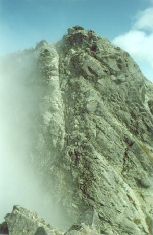

| Maria Pawlikowska-Jasnorzewska
(1891-1945)
Z gór
VI
Ogrody Wallenberga! Widział je Karłowicz
i czescy taternicy, nie goleni, płowi,
klnąc, wiszący na rękach,
sznurem powiązani,
po prostopadłej ścianie wchodząc jak po grani.
A tam anielski ogród zawisnął prywatny,
kwietne gniazdo
na szczycie karkołomnej wanty.
Tam, nad klombami leluj, kozłowca, storczyków,
fruwają aniołowie wśród słodkiego krzyku
i w śmiechu
lśnią rzędami uzębień srebrzystych
na widok
purpurowych wysiłków turysty... |

Kozi Wierch widziany z Kozich Czub
fot. Sivy |